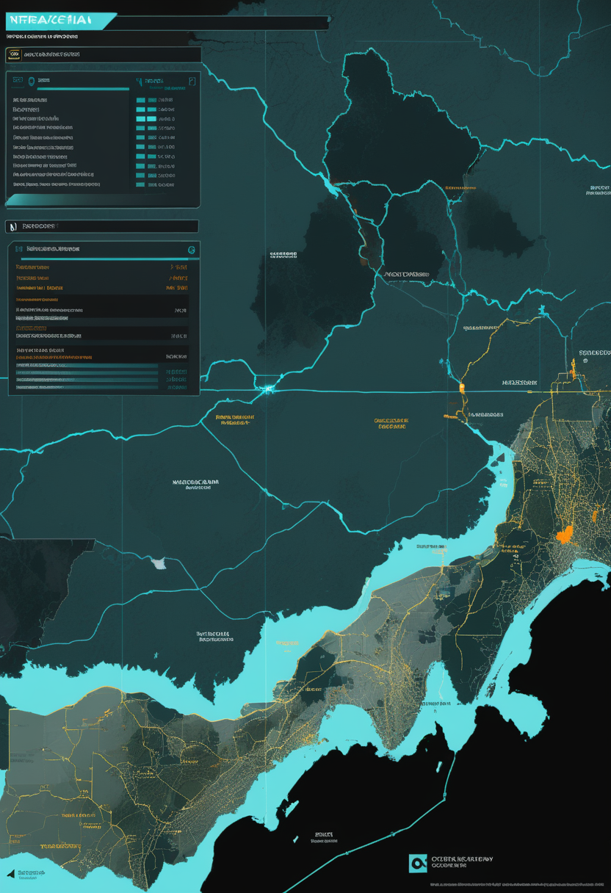
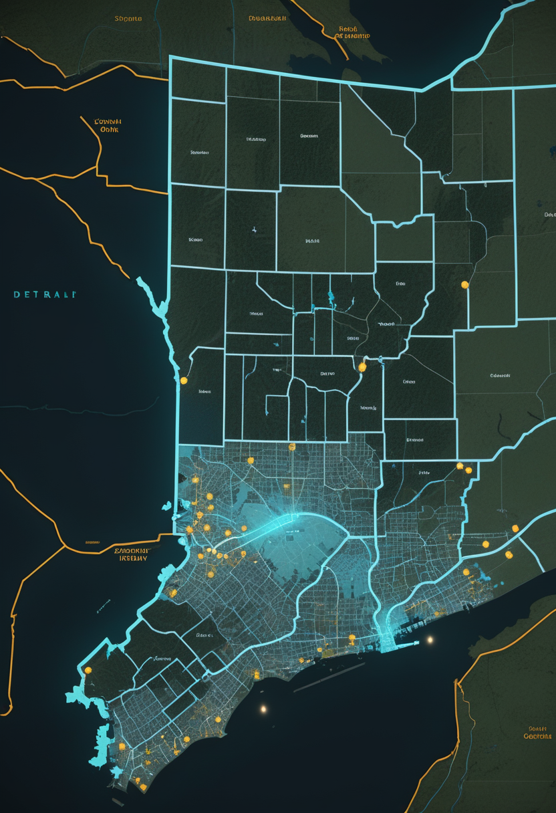

日曜日の便り。ケニア保健省は10月17日、エボラ(ブンディブギョ型)の新たな4例を確認し累計7例になったと発表した。うち3人は1例目を治療した医療従事者で、ケニア国内で感染した初めての例。4人とも陽性判明前から隔離されており、保健省は市中感染の証拠はないとしている。基盤の章ではこれに加え、米CDC集計でDRCの確定例が9,277例・死亡4,478人に更新されたこと、米フロリダ州の国内感染デング熱が8郡296例と州の過去最多を更新したことを届ける。自由の章では、北京協和医院のBCI外来で診療能力が需要に追いつかない現状と、中国科学院が示した樹状突起による『規則』の計算を。畏敬の章では、Googleがマジック状態培養を実機で示したことと、FASTが見つけたパルサーが確認2例目のパルサー三体系だったこと、深圳とシュトゥットガルトが量子チップ上でフォノンをエンタングルさせたことを。命の章では、1型SMAで遺伝子治療とヌシネルセンを比べた仏レジストリ研究を。美の章では、故人を再現するAI93システムの監査と、ネアンデルタール人の木工技術が想像以上に進んでいたという発見を取り上げる。
10/17号の続報 ― ケニア保健省は10月17日、ブンディブギョ型エボラの新たな4例を確認し、累計7例になったと発表した。うち3人は1例目の患者を治療した医療従事者(29歳・35歳の男性、32歳の女性)で、残る1人は1例目の男性親族。ケニア国内で感染した初めての例になる。4人とも陽性判明前から隔離されており(医療従事者は10月9日から、親族は10月6日から)、保健省は市中感染の証拠はないとしている。前号までは『家族内の二次感染』が焦点だったが、今日は『医療従事者への院内感染』へと一段進んだ。接触者130人中128人(98.5%)を追跡・隔離済みで、保健省が目安とする85%を上回る。
フランスの全国SMAレジストリから、診断後6か月以内に初回治療を受け2年以上追跡した1型の子ども24人(12組)を比べた研究が改めて報じられた。遺伝子治療群はヌシネルセン群より栄養サポート(9%対50%)と夜間の人工呼吸(45%対80%)を必要とした割合が低く、治療反応が不十分だった割合も25%対67%と低い一方、運動機能の伸びは同程度だった。2025年発表の論文で、著者らは無作為化試験での確認が必要としている。
今週はSMAの商業・規制面での新規発表が乏しく、治療の『順序』を問う比較研究1件のみ。遺伝子治療とヌシネルセンのどちらを先に置くかという論点は、無作為化試験なしでも観察データの蓄積で輪郭を帯びつつある。
北京協和医院のBCI外来は週2回の診療で、相談は月100件近くあるという。一方、機器と詳しい評価の手順に限りがあるため、専門評価を終えられるのは月70〜80人にとどまる。記事は、非侵襲型BCI1台で診られる患者は月5〜8人が上限だとし、2026年9月時点で米FDAが販売承認した侵入型BCIはないとも伝えている。装置の承認競争の裏で、診療の受け皿が追いついていない実情を示す一本。
中国科学院脳科学・知能技術卓越イノベーションセンターの徐寧龍チームは、マウスが規則の切り替わる聴覚課題をこなす様子を二光子イメージングと光遺伝学で調べた。その結果、皮質ニューロンの先端の樹状突起が抽象的な規則を、細胞体が感覚情報を担い、両者が協力して判断を出していることが分かった。神経細胞を1つの点として扱う従来モデルへの挑戦で、将来のBCIデコーダ設計にも関わる基礎研究になる。
中国はBCIの承認から臨床処方までを一気に進めたが、評価する側の体制が追いついていない。樹状突起が規則そのものを担うという発見は、将来のデコーダ設計の前提を変えうる基礎研究だ。視線入力は今週も新規ニュースを取得できなかった。
10月17日の発表で、ケニアのエボラ累計は7例になった。1例目は10月3日にDRCからナイロビへ移動し、10月5日に死亡している。新たな4例のうち3人は医療従事者(29歳・35歳の男性、32歳の女性)、残る1人は1例目の親族。2例目・3例目の患者は安定している。接触者130人中128人(98.5%)を追跡・隔離済みで、保健省は目安とする85%を上回ると説明する。リスク評価は『低い』のままで、国境・移動・集会の制限はない。

米CDCの最新集計によると、全体で確定9,300例・死亡4,481人、うちコンゴ民主共和国(DRC)が9,277例・死亡4,478人(推定例は含まず)。前号時点の9,235例・4,444人(DRC9,212例・4,441人)からさらに増えた。CDCのページ上は集計基準日の表記(as of Oct.14)とページ更新日(Oct.13)が食い違っており、時点の厳密な特定は要確認。ブンディブギョ型に承認済みのワクチンや治療薬はなく、WHOの緊急事態宣言(PHEIC)は継続中。

フロリダ州保健局の週報(第39週、10月3日まで)によると、今年の国内感染デング熱は8郡で296例、直近1週間の新規は44例だった。最多はヒルズボロ郡の259例。前の州記録は2023年の200例弱で、タンパ周辺の複数の郡が緊急事態を宣言した。
ケニアでは『家族内の二次感染』からさらに進み、医療従事者への院内感染という新しい壁に突き当たった。DRCでは集計が9,300に迫り、米本土ではフロリダのデング熱が過去最多を更新した。熱帯感染症は国境や医療制度の強さを問わず、同時に複数の場所で動いている。
Google Quantum AIは10月15日付のScience誌で、Willowプロセッサ上でのマジック状態培養を報告した。報道によると、培養しない場合に比べて誤りを約40分の1に減らし、T状態の論理忠実度は99.99%。誤り耐性のある量子計算に必要な物理量子ビットを減らす技術だが、実用機そのものではなく構成要素の一つにあたる。数値は報道ベースで、論文本文では未確認。
FASTが2020年に見つけたミリ秒パルサーJ0435+3233(自転周期約3.2ミリ秒)は、自転の遅れ方が同種のパルサーより2桁大きいことが分かっていた。国家天文台の韓金林チームはGaiaやフェルミのデータも組み合わせ、太陽とほぼ同じ質量の伴星が73.5年周期・離心率0.6の軌道でパルサーと白色矮星の連星を回っていることを突き止めた。距離は約6,500光年で、確認されたパルサー三体系としては2例目。強い等価原理を検証する天然の実験場になる(ApJL、10/9)。
深圳国際量子研究院のチームは独シュトゥットガルト大と共同で、拡張可能な二次元ハイブリッド量子チップ上で、多者が真にエンタングルしたフォノン(音の量子)状態を作り、ノード間で伝送した。成果はScience誌に掲載されたと新華社が報じている。音響を使った量子ネットワークへの一歩。出典は報道の要約で、論文本文は未確認。
量子では、米国の誤り訂正(Google)と中国の音響量子ネットワーク(深圳)が同じ時期に進展を見せた。天文では、FASTが見つけたパルサーが確認2例目のパルサー三体系だと分かり、強い等価原理を試す新しい実験場になった。
米Lehigh大のShi氏とDiFranzo氏は、公開情報をもとに故人を再現するAIの93システムを監査した。82システムで同意・権限の情報が乏しく、82システムで異議申し立てや救済の情報が、77システムで削除・エクスポートの情報が不十分だった。作成時の同意だけに頼らず、遺族・記録・事業者・受け手に分かれた権限を時間を追って追跡できるようにする『関係的権限』を提案している(2026年8月の査読前論文)。
バルセロナ近郊の岩陰遺跡アブリック・ロマニで見つかった597点の木製遺物・痕跡を調べた研究がScience Advances(10月7日)に掲載された。年代は約6万2千年前から4万年前にまたがり、武器・道具・生活用品まで幅広い木工品が作られていたことを示す。石器を中心に組み立てられてきたネアンデルタール人像に、朽ちやすく残りにくい木という材料への高い習熟が加わった。
故人を再現するAIの監査は、同意という手続きがどれほど薄いかを数字で示した。6万年前の木工技術の精密さは、朽ちて残らなかった技術の厚みを教えてくれる。人間を『記録する』技術と、失われた技術を『掘り出す』作業が、同じ週に別の時間軸で動いていた。
日曜日の便り。ケニアでエボラの新たな4例が確認され、うち3人は1例目を治療した医療従事者だった ― 『家族内の二次感染』から『院内感染』へと一段進んだ節目になった。基盤の章では、米CDC集計でDRCの確定例が9,277例・死亡4,478人に更新されたこと、米フロリダ州の国内感染デング熱が州の過去最多を更新したことを届けた。自由の章では、北京協和医院のBCI外来で診療能力が需要に追いつかない現状と、中国科学院が示した樹状突起による『規則』の計算を伝えた。畏敬の章では、Googleがマジック状態培養を実機で示したことと、FASTが見つけたパルサーが確認2例目のパルサー三体系だったこと、深圳とシュトゥットガルトが量子チップ上でフォノンをエンタングルさせたことを取り上げた。命の章では、1型SMAで遺伝子治療とヌシネルセンを比べた仏レジストリ研究を届けた。美の章では、故人を再現するAI93システムの監査と、ネアンデルタール人の木工技術が想像以上に進んでいたという発見を伝えた。
では、また明日の朝に。 — JaH